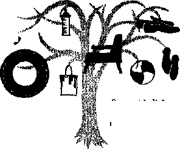
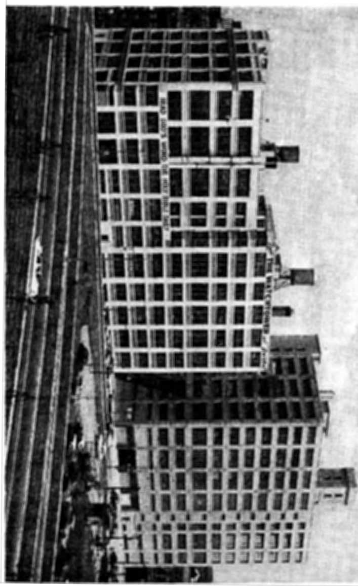

WHEN YOU PRAY, DOES GOD LISTEN?
The answer depends on you!
Rubber, That Hardy Perennial
Some side lights on its history and manufacture
South Africa a Divided Union
Up to date on the apartheid issue
Calling Men "Reverend” and "Father”
THE MISSION OF THIS JOURNAL
News sources that are able to keep you awake io the vital issues of our times must be unfettered by censorship and selfish interests. “AwokeI” has no fetters. It recognizes facts, faces facto, is free to publish facto. It is not bound by political ambitions or obligations; it is unhampered by advertisers whose toes must not be trodden on; it is unprejudiced by traditional creeds. This journal keeps itself free that It may speak freely to you. But it docs not abuse its freedom. It maintains integrity to truth.
"Awake 1” uses the regular news channels, but is not dependent on them. Its own correspondents are on all continents, in scores of nations. From the four comers of the earth their uncensored, on-ihe-scenes reports come to you through these columns, This journal’s viewpoint is not narrow, but is international. It is read in many nations, in many languages, by persons of all ages. Through its pages many fields of knowledge pass in review—government, commerce, religion, history, geography, science, social conditions, natural wonders—why, its cover* age is as broad as the earth and as high as the heavens.
"Awake 1” pledges itself to righteous principles, to exposing hidden foes and subtle dangers, to championing freedom for all, to comforting mourners and strengthening those disheartened by the failures of a delinquent world, reflecting sure hope for the establishment of a righteous New World.
Get acquainted with "Awake!” Keep awake by reading “Awake!”
Published Semimonthly By WATCHTOWER BIBLE AND TRACT SOCIETY OF NEW YORK, INC. 117 Adams Street, Brooklyn 1, New York, IL S. A.
N, H. Knorr, President Grant Suiter, Secretary
Printing this issue: 11950,000
Utlw Jj) whJ th "Awahf" fs jutffsfrrt;
Semimonthly—Afrikaans, Finni-i^ French, German, HoLlandl^h, Italian. Norwegian, Nparrish. Swedish. Mofttftty—Danish, (keek, Japanese, Portuguese, Ukrainian. «
Yearly ^ubucriptian ralc-t
OrflcM for MmlffituiUily editland
A Maric*, U.S., ITT Adutu St, Brooklyn 1, St Autrall*, 11 Beresford Rd., BLratWld, N-S.W, S/-CatWda. 150 Brldgehnd Ave., Park Road P.O.,
Toronto 10, Ontario M
England, 34 Crwen Terrace, London W. 2 7/-
New Zealand, C,F.I). Box 30, Wellington, C. 1 7/-South Africa. Private Bag, Elamiafnntuln, T?L 7/*
Monthly editions cast half the above rates.
Five cents a copy
fferaittiioiJft shoLifif fir" ffttfi co tyffce In ftw dBt/if-try in compliance with regulations to guarantee Uite delivery of hionoy. Remittances are accepted at Brooklyn from euuittriw where no office is located, by International money order only. Bubscrlptlnn rales in different countries are here stated in local currency, Notice of expiration (with renewal blank) is sent at least two ifi&ues before subscription ox-tiijrs. Change at' address ri hen sent to our offkv may be expected effective within one month. Send your old *r well 4s now address.
Entered as second-class matter at Brooklyn, N. Y Printed In U.S.A.
CONTENTS
When You Pray, Does God Listen? 5 No Substitute tor a Good Example
A Strike That Benefited No One
New Home of Watchtower and
“Your Word Is Truth”
Calling Men “Reverend1’ and “Father” 25
HEN It comes to religion, such scientists as physicists, astronomers and mathematicians may be said to fail in two general groups. On the one hand there are those whose concept of the universe as well as their philosophy of life demands faith in God as the Creator and the Universal Sovereign. Among such are Einstein, who once stated: “I cannot believe that God plays dice with the cosmos," Millikan, dean of American scientists, C. Morrison, author of Man Does Not Stand Alone, Isaac Newton and many others who could be named.
On the other hand there are those who are of the same mental attitude as the eighteenth-century mathematician and astronomer, Laplace, It js recorded that when Napoleon, in whose government Laplace served for a time, mentioned to Laplace that he had heard that Laplace had written a great book about the universe without ever mentioning God as its Maker, Laplace replied: “I had no need for such an hypothesis. It is superfluous!” In a similar manner the psychologists, who concern themselves with problems of human behavior, may be said to fall into two general groups, although from another viewpoint it might be said that there are no groups among the psychologists, each having his own theory. On the one hand are the "mechanists,” who would have us believe that man is like a machine and also like the lower animals, in that man will always respond to certain stimuli or circumstances in his environment in the same way, so that man’s conduct under certain conditions can be predicted “with the same, certainty with which the astronomer predicts an eclipse of the sun.” And, on the other hand, there are those psychologists who are increasingly stressing the importance of religion in man’s attaining mental health, stability and maturity, and even physical health, by reason of the psychosomatic principle.
Regarding the psychologists who hold that religion is an integral part of man, it appears not only that their number is increasing but that they are attaching increasing importance to religion. Thus Dr. C. Jung, considered by many psychologists to be the brightest luminary in the modem psychological heavens, once stated that “among all my patients in the second half of life, that is to say, over 35 years,
there has not been one whose problem in the last resort was not that of finding a religious outlook.”
In the same vein is the conclusion reached by Dr. V. Frankl, psychology professor at the University of Vienna and president of the Austrian Society of Medical Psychotherapy. According to him much of the tension and frustration in the world is due to people’s trying to deny their need of religion, as some in times past have tried to deny their need of sex. He believes that three fourths of the people of Europe are suffering in some way from trying to suppress or ignore their need of religion. In fact, he terms this trying to get along without religion 'the real disease of our age.’
Note also the similar testimony of other veteran psychologists. J. T. Fisher, in his A Few Buttons Missing, points to religion as the best preventive for that mental state in which there are “a few buttons missing.” H. C. Link, in his Return to Religion, shows man’s imperative need of religion and that the solution to modem man’s dilemma is not "Know thyself,” but “Behave thyself!” And F. Kunkel stresses the importance of religion throughout his book In Search of Maturity.
Religion, according to these as well as many more that could be cited if space permitted, obviously has psychological value. However, unless it is the true religion it can at best merely serve as a sleeping pill for the people. For genuine, thorough, lasting and maximum benefits it must be the true religion, one that satisfies not only man’s need for worship but also the challenges of his reason.
Reason requires that we believe in the existence of the Supreme Being, all the atheists and agnostics to the contrary notwithstanding. How so? Because reason tells us that every effect has a competent cause, and therefore the vast, orderly and beautiful effect known as the universe demonstrates the existence of an allpowerful and all-knowing, yes, and beneficent Cause, the Creator.—Romans 1:20.
The facts show that this Creator gave the lower animals a dependable guide in their instincts. But man, when he follows his instincts, comes to grief. Obviously man needs another kind of guide, and is it not reasonable to conclude that the Creator would furnish man with such a guide? Yes, for he, better than man himself, knew that “the way of man is not in himself, that it is not in man who walks to direct his steps.”—Jeremiah 10:23, Rev. Stan. Ver.
And reasoning from the facts at hand forces us to the conclusion that the Bible is the guide furnished by the Creator himself for man’s benefit. Among such facts are: the findings of geology and archaeology; the candor of Bible writers as well as their harmony; the Bible’s preservation in spite of all the attempts of its enemies to destroy it by violence or by propaganda; the fulfillment of its many prophecies and the testimony of the noblest man, the greatest teacher that ever lived, Jesus Christ, who said in prayer to God: “Your word is truth.”—John 17:17, New World Trans.
Since the Bible has God as its Author it should contain the best psychology, for who could understand man better than his Maker? Do we not look to the manufacturer of a machine for information as to how to operate it and keep it in repair? So should we not look to the written Word of the great Manufacturer of man, namely Jehovah God, for information helping us to understand ourselves, the art of human relations and how to gain peace of mind? Certainly! Searching God’s Word the Bible for information about man is the only really wise course to take!
WHEN YOU
RAYERS for Big 4 Said by Mil-
Thus the New York Times,
lions.
July 18, 1955, headlined the story of the response to President Eisenhower’s request that Americans pray for the success of the Geneva conference. Now, more than a year after that conference was held, can it be said that it was a success? No, far from it! Rather, it was a disappointing failure. And that in spite of all the prayers offered.
Illis, however, should not have surprised anyone. Did not hundreds of millions pray for peace during the 1950 “Holy
Year”? And yet what followed was not peace but the Korean war. And for some years now have not many millions been praying that communism might be defeated, and does it not keep on growing stronger in spite of all such prayers?
Why have all these prayers not been answered? Does God not listen to them, or is he unable to answer such prayers? Or does He have conditions that must be met before he will listen to our prayers? And could it be that he also limits what we may pray for?
First of all, let us note that the fault does not lie with God. Being almighty and all-wise, God can "do more than superabundantly beyond all the things we ask or conceive,” the apostle Paul tells us. And God has also the will to answer prayers. As Jesus assured his listeners: “If you, although being wicked, know how to give
St
ell.known American minister »yt that there is no unanswered prayer, that God answers all prayers either yes or no. ft God does not even listen to some prayers. For the Bible's position on prayer, read on.
good gifts to your children, how much more so will your Father who is in the heavens give good things to those asking him?”—Ephesians 3:20; Matthew 7:11, New World Trans.
We should not expect the true God to answer prayers that are not directed to him but to false gods who cannot answer prayer, simply because those offering such prayers may be sincere. Being the one true God, Jehovah brooks no rivals: "I Jehovah your God am a God exacting exclusive devotion.” For him to listen to our prayers we must acknowledge his claim: "I am God, and there is none else.”—Exodus 20:5, New 'World Trans.; Isaiah 46:9.
God’s Conditions for Prayer
It we would have God listen to our prayers we must comply with his conditions for prayer. First of all we must sincerely be trying to do what is right. “If one turns away his ear from hearing the law, even his prayer is an abomination.” As Jehovah told the Israelites in Isaiah’s day: “When you spread forth your hands, I will hide my eyes from you; even though you make many prayers, I will not listen; your hands are full of blood. Wash yourselves; make yourselves clean; remove the evil of your doings.”—Proverbs 28:9; Isaiah 1:15, 16, Rev. Stan. Ver.
Faith also is a requirement. “Moreover, without faith it is impossible to win his good pleasure, for he that approaches God must believe that he is and that he becomes the rewarder of those earnestly
seeking him?’ James, the disciple and half brother of Jesus, emphasized this same condition of faith; “Keep on asking in faith, not doubting at all, for he who doubts is like a wave of the sea driven by the wind and blown about. In fact, let not that man suppose that he will receive anything from Jehovah.”—Hebrews 11:6; James 1:6, 7, New World Trans.
Further, if we would have God listen to our prayers we must come in his appointed way. A* Jesus said: “No one comes to the Father except through me.” And as the apostle Paul tells us, Jesus having been raised from the dead, “he is always alive to plead for” Christians. However, not a word do we read anywhere in the Scriptures about Jesus’ mother or any of the “saints” being authorized or asked to intercede on behalf of others.—John 14:6; Hebrews 7:25, New World Trans.
Nor may we overlook the fact that, Jehovah being supreme, our prayers must always be in line with his sovereign will. Call to mind Moses’ experience in this regard. When Moses prayed to God to spare the nation of Israel on account of his word and name God listened and answered Moses’ prayer. But when Moses repeatedly prayed that he be permitted to enter the Promised Land, God finally had to tell him: “That is enough of you! Never speak to me further on this matter.”—Deuteronomy 3:26, New World Trans.
Jesus fully appreciated this principle. That is why in the garden of Gethsemane he prayed: “Father, if it is possible, let this cup pass away from me. Yet, not as I will, but as you will.” Clearly, then, if our prayers are selfish or ignore God’s will we cannot expect God to listen to them. As James told certain Christians in his day: “You do ask, and yet you do not receive, because you are asking for a wrong purpose.”—Matthew 26:39; James 4:3, New World Trans.
So when archbishop Cushing of Boston prays to “have our railroads run regularly on time and comfortably” (New York Times, January 3, 1956); when a Roman Catholic priest in St. Joseph, Missouri, “calls for special prayers for new industry to move here” (Times-Review, January 13, 1955); when a prize fighter prays before going into a ring or a bull fighter before he enters the arena, or when football players go to mass just before going on the field, we may be certain that all such prayers, having nothing to do with God’s will and purposes, and being offered purely for personal, selfish reasons, are not heard by God.
Still less should we expect God to listen to prayers that go directly contrary to his will. God, having decreed the destruction of Jerusalem, commanded Jeremiah: “Pray not thou for this people, neither lift up cry nor prayer for them, neither make intercession to me: for I will not hear thee.” So, since the Scriptures show that God has doomed Christendom, modern Babylon, Christians may not pray for it but must heed God's warning: “Get out of her, my people, if you do not want to share with her in her sins, and if you do not want to receive part of her plagues.” —Jeremiah 7:16; Revelation 18:4, New World Trans.
What We May Pray For
The expression, “There are no atheists in foxholes” well describes the attitude taken by most persons toward prayer. They consider it something to be resorted to for personal, material benefit and especially in time of danger. However, Jesus, in giving us the model prayer, placed first the triumph of righteousness. “Let your name be sanctified,” means the triumph of righteousness throughout the universe. And “Let your kingdom come. Let your will come to pass, as in heaven, also upon
earth,” means for righteousness to triumph at the place where it has been pushed aside so much, namely, right here on earth.—Matthew 6:9, 10, New World Trans.
In his model prayer Jesus next takes note of our individual, personal, material needs; but only needs, and that only for a day at a time: “Give us today our bread for this day.” That prayer implies contentment with necessities and no anxiety regarding the morrow. And it is God’s will that we have the necessities of life.—Matthew 6:11, New World Trans.
In the remaining three petitions of his model prayer Jesus would have us conscious of our spiritual need. They may be said to concern the triumph of righteousness within ourselves, even as the first three petitions concern the triumph of righteousness in the universe and on earth. So we are to pray, “forgive us our sins” or “forgive us our debts”; our sins putting us in debt with God as it were. As the apostle John also showed: “If we confess our sins [to God], he is faithful and righteous so as to forgive us our sins and to cleanse us from all unrighteousness.”—Luke 11:4; Matthew 6:12; 1 John 1:9,"New World Trans.
In keeping with this attitude of mind are the remaining petitions: “And do not bring us into temptation, but deliver us from the wicked one.” Thereby we express our dependence upon God and a wholesome fear of displeasing him.—Matthew 6:13, New World Trans.
Of course, in giving us the model prayer Jesus did riot include therein all the things we may pray for. Thus at the same time he also said that “the Father in heaven [will J give holy spirit to those asking him!” And God’s Word shows that his holy spirit is indispensable to Christians, for it both helps them to understand God’s will for them and gives them the needed strength
to do that will,—-Luke 11:13, New World Trans. :
And we are to pray for wisdom, even as King Solomon did and as the disciple James counsels: “If anyone of you is lacking in wisdom, let him keep on asking God, for he gives generously to all and without reproaching, and it will be given him."—James 1:5, New World Trans.
And as the Israelites of old prayed “for the peace of Jerusalem,” so Christians today are to pray for spiritual or heavenly Jerusalem as represented on earth by the dedicated Christian witnesses who serve as a New World society. And even as did the early Christians these may pray‘for each other, for more privileges of service, for ability to discharge their obligations aright and for God’s blessing upon their efforts.—Psalm 122:6.
Acting in Harmony with Our Prayers
There is yet one condition that God requires that we meet if we would have him listen to our prayers. And that is? Consistency! By our prayers we obligate ourselves to a certain course of action that we must endeavor to follow or be hypocrites. We must do our part to show the sincerity of our prayers. To pray for God's name to be sanctified and deliberately bring reproach upon it would be hypocritical. The same would be true were we to pray for God's kingdom to come and then work against it; or pray for his will to be done on earth and then not try to do his will ourselves.
When we pray God to “give us this day our bread for the day” we must put forth an effort to acquire that bread, recognizing God’s principle: “If anyone does not want to work, neither let him eat.” We must do ail that we can and yet continue to pray, for it is “God who makes it grow.”—2 Thessalonians 3:10; 1 Corinthians 3:7, New World Trans.
Also, Jesus included in his prayer that we be forgiven even as we have forgiven others. And consistency also requires that when we pray for God not to bring us into temptation but to deliver us from the evil one, we do not carelessly or deliberately walk into temptations. Likewise, when we pray to God for his holy spirit and for wisdom we obligate ourselves to make use of all the arrangements he has provided for our acquiring these: the Bible, Bible study aids, association with other Christians as well as participation in the Christian ministry.
Consistency requires also that we “persevere in prayer.” If we are in earnest we shall not become easily discouraged. To impress upon us the need “always to pray and not to give up,” Jesus told of the importunate widow who persevered until the calloused judge finally granted her petition.—Romans 12:12; Luke 18:1-8, New World Trans.
However, Jesus did not mean by this that we are to utter mechanical, thoughtless repetitions. On the contrary, he plainly condemned such, saying: “But when praying, do not say the same things over and over again, just as the people of the nations do, for they imagine they will get a hearing for their use of many words.” —Matthew 6:7, New World Trans.
Some may ask, What position should we take in prayer and where may we pray? Although the Bible speaks of God’s servants kneeling while praying ft also tells of others praying while standing and while prostrate upon the ground. The position taken is not important. And we can pray anywhere. Nehemiah prayed silently while offering King Artaxerxes wine and God heard and answered that prayer immediately. Jesus did not forbid public prayers; he himself prayed in public. But he did severely condemn private prayers made in public to be seen of men. A Christian should pray before retiring at night, upon arising in the morning, at mealtimes, before going forth in the ministry, before speaking from the platform, etc. It might be said that to ‘walk humbly with one’s God’ implies an attitude of prayer.—Micah 6:8.
So, when you pray, is God listening? He is if you pray to the one true God, if you meet his conditions for prayer, if you pray for the right things and if your actions are consistent with your prayers.
According to a fable, a mother crab was telling her son not to walk crookedly. “All right, mother,” it replied, “since you want to teach me, walk straight yourself. I’ll watch you and copy you.” That, in effect, is what many thinking children are telling the adults of this generation. Not long ago the New York Sunday Mirror published a letter from a 17-year-old boy. His letter said: “To all those who have expressed their views and ‘remedies' of juvenile delinquency, may I say with all respect: The youthful criminals of any city, state or country did not invent erime and vice. It has become part of their life and environment since the day they were brought into the world. All the discipline as in 'olden days,’ all of the authority of bigger and bigger police forces, and all of the Boys' Clubs and PAL organizations, as good as they may be, are no substitute for a good example, which should be set by every adult. Can you blame the youth of our country for not respecting authority when those in important offices, police departments and government misuse the authority the people entrusted them with? Can you blame minors guilty of crimes, when the books they open, movies produced, newspapers they see are filled with every rotten crime and scandal ever committed?”
» "AWAUl" CORRESPONDENT IN northern rhocesia
Some aide lights on its hUlory and manufacture
THAT HARDY PERENNIAL
ill HERE should we be wlth-VV out rubber? In the nursery, the playground, the classroom, the kitchen; in our traveling to work by cycle or automobile; when we walk out in the rain; when we are wiring the house for electricity, yes, in many places and for many purposes rubber plays a vital role. Nipples for baby’s bottle, waterproof bedsheets, erasers, tap washers, tires for autos and cycles, material for soling shoes, waterproofing coats, or insulating wire, etc., all call for rubber.
It is true that in this age of synthetics some roles previously filled solely by rubber are now filled equally well, and in some cases more effectively, by the new synthetic materials. But at the same time new methods of treating rubber and new uses for this inexhaustible material keep it in the forefront and In constant demand.
Rubber has a romantic history. Some four hundred years or more ago explorers of the New World found Indians in Central and South America playing a game with a bouncing ball that they had made from the dried gum of a tree. This game was played by the Aztecs in a high-walled court and was called by them “Tlachtli.” Remains of these ball courts have been found in a number of settlements in Mexico and Central America. The South American Indians gave the descriptive name of “cau-uchu” or “cahutchu” to this gum-bearing tree. The name means “weeping wood,” for the tree appeared to weep when cut, its milky tears providing the substance from which they made their bouncing balls.
The first practical use for the substance was in erasing lead-pencil marks. Observing this, Dr. Joseph Priestly (better known for his discovery of oxygen) mentioned the substance in his writings in the year 1770, calling it “rubber.” In the year 1820 Thomas Hancock, an Englishman, invented the “masticator,” a machine that grinds rubber and’makes it workable. It was this invention that marked the beginning- of rubber manufacture as we know it today. Another name that is readily associated with rubber is Macintosh. Charles Macintosh was, of course, the originator of the raincoat that he first made by putting two sheets of rubber together with a sheet of fabric between them.
The, Rubber Rush
But one of the snags in those early days of rubber was that the substance would become hard and brittle in cold weather and soft and sticky in hot weather. This was overcome by the process called “vulcanizing,” which was discovered almost by accident by Charles Goodyear in the year 1839, Since that time the uses to which rubber has been put are almost innumerable. But, without any doubt, what gave rubber its greatest boost was the emergence of two vehicles, the bicycle and the automobile. When air-filled pneumatic tires came on the market, cycling became more than just a quicker method of getting from one place to another. In the 1880’s it became a popular pastime in
Britain, and the United States quickly followed.
The result was What could be called a “rubber rush,” which brought boom conditions to rubber-producing areas, particularly in Brazil. Britain introduced and developed the growing of rubber in the Far East and for many years, up until the end of the first world war, she had more or less a monopoly in this field. It was not until 1924 that the United States launched into the rubber business in a big way, when Firestone entered into negotiations with the government of Liberia for opening up rubber plantations in that country.
The Firestone enterprise in Liberia has resulted in the building up of the largest single rubber plantation in the world at Harbel. Harbel has more than 90,000 acres planted with more than 10,000,000 rubber trees. Supervised by a handful of American overseers, some 30,000 native employees produce some 70,000,000 pounds of concentrated latex and crepe rubber annually.
Gathering, Shipping, Processing
The chief product at the Harbel factory of the Firestone company is liquid latex. Latex is the name given to the white milky substance that is drained from the trees. The problem is to keep this substance from coagulating, for once coagulated it cannot be reconverted into the liquid form. Each African tapper cares for from 250 to 300 trees each day. First, in the early morning, he makes his rounds to make the incision in the bark. This has to be just the right depth, otherwise the tree might be permanently damaged. The latex is not, as some have erroneously thought, the sap of the rubber tree. It is an emulsion, tiny particles of rubber suspended in a watery solution and secreted in the cortical tissue between the outer bark and the wood. As soon as the tapper makes his cut the latex begins to flow, moving down the edge of the cut and into a cup at the lower end of the cut. It looks something like milk of magnesia. To prevent coagulation the tapper puts a few drops of ammonia in the cup. Later in the morning the tapper returns to collect the latex, which he takes to tank trucks for transporting to the central processing plant.
In the plant the liquid latex is prepared for shipment in liquid form to the United States. In this part of the plant the scene is reminiscent of some great milk pasteurization and purifying plant. There is the same look of sterilized whiteness in the tiled walls, white painted equipment, stainless steel, and, of course, the milky-white fluid. The latex is here concentrated by means of centrifugal machines, which, acting something like giant cream separators, remove about half the water content from the latex that is to be shipped in liquid form. This latex will contain about 7 percent of ammonia as an anticoagulant. The concentrated latex is then allowed to stand in tanks for about two weeks to allow it to stabilize. This prevents any inclination during transit for the latex to separate, develop lumps and coagulate, thus rendering it useless for processing when it arrives in the United States.
Liquid latex is now in great demand. It is more and more being used as a base for paint instead of lead. Another modem use for latex that has greatly increased the demand is in the manufacture of foam rubber for cushions and mattresses, etc. In fact the processing and shipping of liquid latex is the primary function of the Firestone plant at Harbel, the manufacture of crepe rubber now being but a byproduct. As an interesting comment on the profitableness of the enterprise, the writer, while visiting the Harbel plant,
was advised that the plant can cover its expenses on the sale of its by-products alone, thus making Its sales of the more valuable liquid latex entirely profit
The centrifugal separators produce as a by-product an inferior diluted latex that has a higher ammonia content. This is run off into large open vats, where it is treated with formic acid. This neutralizes the ammonia and allows the latex to coagulate. The result Is a mass of pure white rubber, called “coagulum," about one and a half to two feet thick, which forms on the top of the vats and is then skimmed off. It is then cut up into smaller chunks for easier handling and processing. At this stage these chunks of rubber piled up on the factory floor have the appearance of whale meat. Ever present is the acrid smell of ammonia. The chunks of rubber are now passed through grinding machines and ground up into small particles. From there they go to milling machines, out of which comes the crepe rubber in sheet form. This is cut into lengths of uniform size and hung up to dry in hot-air drying rooms. After drying, the crepe-rubber sheets are placed together in bundles and put in a pressing machine that compresses the rubber into approximately 224-pound bales, which are now ready for shipping.
Nothing is wasted. Latex that may drop from the trees to the ground is collected as well as the gleanings from the sweepings of the factory floor. This is also processed, made into sheets and baled for shipping, to be used in cases where price is more important than quality. Crepe rubber is used for a variety of purposes, such as soling shoes. The poorer grades are used for the cheap-grade tires. The better-grade tires are now all mostly made from synthetic materials. However, natural rubber is still used even in the bestquality tires. “Smoked” rubber is a processed rubber of great strength and elasticity and is used where these qualities are needed, as in the side walls of tires. But the money in the natural rubber industry is in providing the liquid latex for the manufacture of rubber foam and as a base for paints.
Unlike other materials used in manufacturing, there is no end to the supply of natural rubber that the Creator so thoughtfully provided for man’s use. It has served man well in the years past, and like a hardy perennial will be there to serve man for unlimited years to come.
0O /hmt fietrpla Octopus/
Octopus meat, when properly prepared, is a fine delicacy, even better than shrimp. Some people would eat huge amounts of octopus were it not for the fact that octopus is a rich food and a little goes a long way. Just how highly the Greeks esteemed octopus is evident from a story, recorded in volume ten of The Smithsonian
Series, that is told of Philoxenus of Syracuse. Desiring a delicious dinner, he caused an octopus of a three-foot spread to be prepared for the main dish. He alone ate
It, all but the head, and was taken so sick as a consequence of his overeating a rich food that a physician had to be called. On being bluntly told that his case Was desperate and that he had but a few hours to live, Philoxenus called for the head also. Only when he had eaten the last bit of octopus did he resign himself to his fate, saying that he left nothing on earth now that seemed worthy of regret.
America
^THROUGH
'PANSSE
tHOSE who think of the United States imagine it to be a wonderfully rich country. And really it is a great land that yields an abundance of produce, using efficient farm machinery. The people enjoy all the advantages of civilization, with electricity, gas, etc. Thus the housewife does not need to spend a great deal of time at her housework. I did not see the iceman delivering ice as in Japan. Each home has a refrigerator to make the ice on the spot. The hours that United States housewives save can be used for studying many things.
When I saw the equipment in the homes, I wondered how they could afford to buy it. I asked a friend about it. The answer was that many of them were using the system of monthly installments.
The next thing that surprised me was the stream of automobiles passing by with terrific speed. There are various styles and models and years. Some are very old and some are very new, as late as 1956. I noticed that the drivers seldom used their horns, so they were not noisy like a Japanese city. I can say this, not only of one city, but both of New York and San Francisco. As the Americans do not abuse the use of these horns, they keep the town quiet. The Japanese should learn a lesson from this.
In large cities the people have a hard time finding a parking place for their cars. Sometimes they must park the cars one or two blocks away from their friend’s house where they want to visit. In New York they build double or triple highways to solve the heavy traffic problem.
Another thing
that I felt very strange was the abundance of automatic candy sellers. By inserting the money, a person can obtain candy or tobacco or whatever he wants. Also I remember a “cafeteria" restaurant where one serves himself. First we get a tray, knife, fork, etc., then proceed inside, where we can find the various foods already cooked. Everything is heated by hot water or steam, so that it will not cool off. We help ourselves to whatever food we like, but we must watch our money carefully, so that we don’t take more than we can pay for. When I was asked, “Which bread do you like?" I was embarrassed very much, for I did not know the different kinds of bread. A lady standing at the end of the line tells you how much it all is. When we finished eating, we could leave all our dishes there, and we didn’t have to pay tips. From such a system of eating in a restaurant, I learned that there is little loss of time in an American’s life.
Also I could notice the difference in the gentleman’s attitude toward the lady, between the United States and Japan. “Lady first” is true in America. But if we apply “Lady first” here in Japan, people say you “spoil the lady."
The real impression that I got after seeing the United States is considerably different from what I heard before. I felt we need to open our eyes wider so as to be alert to what is going on in the world. We
should be interested not only in the material way of living in a foreign land. Those in the United States who are awake to spiritual things are stressing the importance of the spiritual provision too., We need to walk the path revealed in God’s Word, the Bible, so that we shall not become slaves to materialism.
JAPAN is to me a remarkable Oriental nation in many ways. For its size Japan is without a doubt overpopulated, but, in spite of the aftereffects of a major war and the scarcity of land and natural resources, you seem to manage very well. Everywhere I go I see many food marts with an abundance of foodstuffs, fresh vegetables and fruits. People seem well-dressed and always going places. Recently, when I mentioned this to a friend, he. reminded me that there are still many who cannot afford meat and fresh fruits, whose diet is mainly made up of rice and fresh vegetables. This of course is true, but it does surprise me to see so many frequenting the coffee shops, patronizing the movie houses, playing the pinball slot machines, etc. Incidentally, you Japanese brew a delicious cup of coffee.
Another remarkable thing to me is your transportation system. It is excellent indeed considering the difficulties offered by the mountainous country. There is hardly a place I cannot go by train or bus. The way small children take up whole seats, and, together with the men, have preference over the women for seats is something I have not been accustomed to. However, whether sitting or standing, riding the train exposes one to Japan’s beautiful mountain scenery. Yes, blue skies, brilliant sunshine, Japan lacks none of. these! The verdure of summer, its numerous and many varieties of trees: maples, oaks, chestnuts, elms and, of course, her very famous and beautiful cherry blossom trees in the springtime, and impressive, stately Mt. Fuji all add up to a beautiful spot in Jehovah’s creation! Women carrying children on their backs and working at the same time, men riding bicycles and balancing heavy loads in one hand, rain or shine, are new to me. Removing our footwear before entering a home, sleeping on thickly padded quilts laid on the floors instead of beds, heating a room by means of charcoal braziers are also, of course, very different from our way of living. Electricity and radio are widespread, to my delight.
The inside of the dwellings is most impressive to me, and most Americans will agree with me on this; namely, their cleanliness and special beauty of simplicity. To illustrate: A room may not have many pieces of furniture, but an exquisitely superb flower arrangement adorning the alcove in the corner of the room, with a hanging scroll overhead with some famous saying, or a picture in keeping with the season of the year, and perhaps just a few
well-chosen ornaments in the alcove reveal an outstanding concept of art. I wish we Americans could capture some of this simplicity and beauty in our interior decorations.
Another matter that has interested me is the way so many travel to the seaside or to the mountains or the hot-spring resorts in family groups. It is noteworthy how business firms also provide special summer jesort houses for their employees and even arrange transportation for them. Then there is skiing. Many engage in this sport with very little cost, whereas in America this would cost no little sum of money.
The small shops employing as many as four people and the many medium-small enterprises took my attention. When I inquired as to the reason for so many employees and also concerning the primitive farm methods using little or no agricultural machinery, the answer I received was, “An abundance of man power.”
This brings me round to the subject of the Japanese people. You impress me as a gregarious race. You don’t particularly like to do things alone or be isolated as we Americans. Whenever I have mentioned a great deal of land in a quiet setting being my idea of desirable living and that of folks back home, you are somewhat shocked and ask, “Don't you ever get lonely?”
Your love of good music goes along with your unique taste for beauty in nature. I have observed, too, that you are great imitators and copyists. While this is good along certain lines, I hope the Japanese people will be selective and not too quick to copy America’s bad points, especially America’s love of pleasure and of materialism. Many lovers of righteousness among the Japanese are aware of the inroads materialism is making in their daily lives and are seeking spiritual prosperity —a life rich in the knowledge of Jehovah God’s purposes as contained in the Bible, and are thus finding the true wealth and happiness.
In recent years many authorities have spoken out on the importance of trees as nature’s police force that guards man against soil erosion, floods and other calamities. It seems that the American Indians have known this all along. At any rate, in New Mexico State Senator I. N. Curtis came up with an essay that, he said, won a contest on soil conservation for an Indian. His laconic essay said:
“White man crazy. Cut down trees. Make big teepee. Plow hill. Water wash. Wind blow soil. Grass gone. Door gone. Windows gone. Whole place gone. Buck gone.
Papoose gone. Squaw too. No pigs. No corn. No plow. No hay. No pony. Indian no plow com. Keep grass. Buffalo eat grass. Indian eat buffalo. Hide make teepee.
Make moccasin. No ask relief. No shoot pig. Great Spirit make grass. Indian no waste anything. Indian no work. White man loco.”—Boston Daily Globe.
Empty Space on a Grand Scale!
C “An atom is built like our solar system. It is almost ail. empty space. The nucleus is the only solid piece. Scientists say that if you eliminated all the space in every atom in the body of a 200-pound man he would be no bigger than a particle of dust. The earth without the space in its atoms would be a ball only one-half mile through.’’—Henry T. Taylor, as quoted by Beader’s Digest.
A Strike That Benefited No One
BOR nineteen days a nation stood motionless, The wheels of industry were stopped cold. Traffic was brought to a standstill.
Newspapers and magazines were not published or delivered. The postal service ceased. The nation of Finland remained paralyzed by a general strike that was ordered to raise the standard of living. Did it?
ft In February, 1956, Finnish farmers de-ckj^d to increase the prices of farm products. This was for the purpose of improving the farmers' economic status, to make farming more attractive, and thus to stop the mass flight of farmers from the country to industries. The exodus has been so great that it has given cause for concern. Hundreds of smaller and even large farms have been left desolate. But as soon as the farmers Increased their prices, the merchants did theirs. So conditions were not improved, but perhaps were worsened by the move, because it took more money to .buy the same amount of goods as before.
•ft Endeavoring to stabilize the economic condition and to pacify the laborer, SAK (the trade union of Finland) threatened employers with a general strike. The union demanded an hourly twelve-mark (about five cents) raise for all workers. It was either this or a general strike. Few people realized the far-reaching effect the strike would have. The last general strike in Finland was in 1906 and that one lasted only three days. So the possibility of a strike was a sort of circus novelty at first.
“ft On March 1 the strike order was issued and the nation came to a halt as if it were one man. Nothing In the way of industry moved. People were calm at first and joked about the peculiar change of things. Traffic was snarled. Private cars operated as long as their gas held out. No commercial gas was sold. No one expected the strike to continue beyond five days. But when it stretched beyond the first and then the second week, the strain on the people became noticeable. They became restless and irritable. They wanted action. Violence began to break out. Bus windows were broken. Private cars were smashed and turned upside down. The police and the strikers began to clash. There were bruises and wounds on both sides. In one flash encounter nineteen policemen suffered injury, ft As tension mounted it sometimes exploded into amusing spectacles. For example, the sanding of the icy streets and roads was forbidden. Cars would slide along from side to side like sleds. Often at the foot of a steep icy hill crowds wodld gather to watch drivers climb the slippery grade. Most of their endeavors were in vain. Sympathetic schoolboys and students tried to lend the drivers a helping hand by carrying sand in their trouser pockets and brief cases. But after them came the strikers with brooms to sweep the icy streets clean of sand.
'ft Through long negotiating a settlement was finally reached. The workers received their twelve-mark raise, while employers received reductions in taxes. The result of higher wages and lower taxes has caused Che Pfn-nish mark to leap into the wide-open mouth of inflation. Almost everything is going up in price—railway tickets, alcohol, gasoline and margarine have gone up as much as twenty percent; sugar jumped fifty percent. Also new items are being taxed by the government.
ft Before the war a million marks could purchase about twenty cars, now it might pay for two. Those who bad hoped for a bet' ter standard of living to grow out of the nineteen-day strike can now see that It has profited them nothing.
BIG BUSIBESS
<[ The recent $109,500,000 sale of American Republics Corporation to Sinclair Oil & Gas Company through Alban Corporation probably established a new record for paper work in a financial transaction. There were 12,000 documents. One pile of them alone was 168 feet high. Required to complete the sale were forty lawyers and corporation officials, nine notaries public and 85,000 signatures and seal impressions.
ATHIRTEEN-story building devoted entirely to the printing and distribution of the Watchtower and Awake! magazines! An entire city block occupied by a beautiful new structure from which these magazines will .be provided! Do these statements sound difficult to believe? Well, the increase in the circulation of these two magazines has been so great during recent years that such a building really has been built. Look for yourself at this new Watchtower printing plant at the right of the picture on the opposite page.
The present building, on the left, will continue to be used in publishing the Bibles and Bible study aids used by Jehovah’s witnesses around the world. The eight-story part of this building was completed in 1927. The nine-story addition next to it was built in 1949. Now the new thirteen-story building that you see at the right has become urgently needed because of the tremendous increase in the circulation of the Watchtower and Awake! magazines. Last year alone 9.5 million more of these magazines were printed than had been produced the year before!
Excavation for the foundation of this urgently needed new printing plant began June 9, 1955. Since then a solidly constructed building of steel and concrete has been built to hold the large rotary presses that are needed to print the wonderful message of God's kingdom.
The steel in this building’s thirteen interior columns weighs 450 tons. In addition, over 1,400 tons of steel bars give strength to the exterior columns and to the floors. Ten thousand yards of concrete compose the real body of the structure. Most of the construction was done during the winter months, so 206 tons of coke were burned to keep the freshly poured concrete from freezing before it had set and cured.
A bridge has been constructed at the sixth-floor level to connect the pressrooms of both buildings and to make it easy to transport materials from one building to the other.
The unique watchtower atop the new building encloses the 10,000-gallon water tank. This tower alone is 35 feet high, and its top is 192 feet above the building's bottom floor. The new building contains a total of 192,000 square feet of floor space. This is well over a hundred-percent expansion, being 30,000 square feet larger than the 162,000 square-foot area of the two other buildings put together.
The tremendous increase in Watchtower and Awake! circulation has also made it necessary for more presses to be ordered for immediate installation in this new factory. Already six new high-speed rotary presses have been ordered from press manufacturers, and the first of these is due for delivery late this year.
The Watchtower's Brooklyn printing plant is situated in the heart of one of the world's great transportation centers and is within sight of earth's busiest port. Its location is ideal for the extensive worldwide distribution of the Bible educational literature that is produced here. Also, the plant's prominent position, stretching from the Brooklyn bridge at the left to the Manhattan bridge on the right, makes it stand out before hundreds of thousands of people as a powerful testimony of both the amazing growth and the stable prosperity of Jehovah's visible organization today.
By “Awakal" corr««pondent in Canado
TIE emotional frenzy into which a people can be whipped over the issue of blood transfusion is demonstrated by a recent case in Turner Valley, Alberta, Canada. Early in May of this year Judy Maddison, five-year-old daughter of Mr. and Mrs. William Maddison, was found to be suffering from a rare enlarged-heart condition. Arrangements were made for her mother, one of Jehovah’s witnesses, to take her to Rochester, Minnesota, Mayo Clinic. The exact nature of her unusual ailment was not at this time known nor was it known if surgery could correct it. Judy was going to Rochester for examination.
Residents of Turner Valley and nearby Black Diamond districts, moved by the plight of this little girl, who, according to the press, was “doomed to die,” contributed toward a fund started by some of the neighbors to care for the expenses of the journey to Rochester and a possible operation. Assistance from the public had not been requested by the parents. It had not even been decided whether an operation could be performed. Mr. and Mrs. Maddison, however, made known their position on blood transfusion. Their stand, based on the Bible's prohibition against eating blood (Genesis 9:3-5; Acts 15:28, 29), would not allow Judy to have a blood transfusion. William Maddison was quoted in the Calgary Herald of May 7, 1956, as
saying, “If there is an operation, I will definitely oppose any blood — . _ transfusion.”
BLOOD Further, “I am not a dedicated member of Jehovah, but' I follow the dictates of my conscience and the Bible and I will steadfastly refuse to give anyone permission to use another person’s blood in
Judy.” The use of a blood substitute, however, such as dextran, was approved by the parents.
This sparked off a wave of emotions} publicity and ill-feeling against the parents and Jehovah's witnesses that was refleeted in many parts of the country. Newspaper articles and editorials condemned the views of Jehovah's witnesses on blood transfusion. Pictures played on the emotions of the people. Indicative of the attitude of some of the residents was the headline in the Calgary Herald of May 7, 1956, “Turner Valley Is Seething over Transfusion Case.” So intense was pqblic feeling that even physical violence was threatened’ A headline in The Albertan, May 8, 1956, said, “ Tlun Witnesses Out of Town on Rail’ "Threats of violence were heard in Turner Valley Monday as residents talked even of ‘running the Witnesses out of town on a rail.' ”
Threats were made and widely repeated to make the child a temporary ward of the government to permit a transfusion. Under the headline “Blood Transfusion Refusal Draws Valley Residents’ Ire,” the Calgary Herald of Friday, May 4, 1956, said: “An attempt to remove a five-year-old girl from the custody of her parents may be made if it becomes necessary to save her life.”
Uninformed but frantic residents wrote directly to the premier of the province
appealing that he take action In the matter.
The money that had been voluntarily donated by the residents of Turner Valley and Black Diamond was returned. As reported by the Calgary Herald, May 7,1956, Mr. Maddison said: “Due to my relationship with Jehovah’s Witnesses, I want It to be known that at no time did I or any of the Jehovah’s Witnesses organize the campaign for outside funds or ask anyone for monies. I did not consider this to be a religious issue at the time. Unfortunately, the picture has changed. It seems that many who gave money would now like to withdraw their support.
“Rather than have any of these violate their conscience, I have returned the complete fund amounting to $125 to the CoOrdinating Council for Crippled Children.” Other funds also collected were not used by the Maddisons. Residents claimed the money would be “wasted" if a transfusion were not allowed.
That this was mass hysteria and nothing else may be readily deduced from the fact that throughout its duration it had not been determined that an operation was possible, much less that a blood transfusion was necessary. But apparently everybody concluded that the child’s life depended on a blood transfusion. “Five-year-old Judy Maddison's life may hinge on her parents’ religious convictions.” (The Albertan, May 4, 1956) “Judy faces a tricky operation for an enlarged heart but her parents deny the aid of one of science’s great saviors—a blood transfusion." (Calgary Herald, May 7, 1956) What started as a wave of sympathy for the child turned into a flood of emotion and hatred for the parents and their religion. The populace was whipped into an unreasoning frenzy bordering on physical violence just because the parents respected and upheld God’s law! Jehovah’s witnesses did not insist that others refuse blood transfusion. If others take blood, Jehovah’s witnesses do not interfere. They expect the same freedom for themselves, The Albertan editorially struck a note of reason in the midst of this fervor when it said:
“But who is to condemn these people for an error in faith if it is an error? That’s what they believe. It’s part of their religion, and the first freedom is freedom of religion. What is more, these people take their religion seriously, which cannot be said of their critics. They stick by it, even when a life is involved. . . .
“But talk of violence against Jehovah’s Witnesses is silly and dangerous. These people are not good citizens in the sense that they don’t vote or assume other duties of a citizen, but at the same time they are quite moral and law-abiding. They may be obnoxious at times but they are harmless. They are sincere. And they live their religion.”—The Albertan, May 9, 1956.
The Maddisons were unmoved in their position, despite repeated appeals to permit the use of blood in the operation. The doctors at Mayo Clinic first refused to operate unless they were given a carte blanche to use whatever methods they thought necessary, but they finally acceded to the requests of the parents and went ahead with surgery. Conservative headlines in the Calgary Herald of May 24, 1956, announced, “Judy Is ‘Fine’; Operation Is Performed; Blood Transfusion Is Not Used for Alberta Girl.”
The article further said: “Judy Maddison, the winsome five-year-old Black Diamond girl suffering a serious heart condition, has successfully undergone surgery. . . .
“Apparently the potential crisis never arrived. Mr. Maddison said the operation
at the Mayo Clinic in Rochester did not require a transfusion.”
The tenor of some newspaper articles and the attitude of the residents of the area was that a refusal of blood was a denial of life. The Albertan (May 5, 1956) quoted one resident: “It’s just like murder." “No religion should ever go so far as denying a child the right to live.” Blood transfusion was viewed as the savior. Yet it was later admitted by the Calgary Herald, "It had not been established at any time whether the transfusion would actually be necessary.”—The Albertan, May 24, 1956.
The objection of Jehovah’s witnesses to the use of blood is based on the Bible. Yet this case adds another to the record. Judy, it was said, was doomed to die if she was not given blood. The operation was performed without it Judy lived. The medical profession can be wrong. Public opinion was wrong. Blood transfusion is not the lifesaver it is averred to be. Obedience to the law of God is better than sacrificing Bible principles under pressure of popular clamor.
LETTER OF PROTEST
THE Bavarian newspaper Suddeutsche Zei-tunff reported that both the Catholic and the Protestant parochial offices of Furstenfeldbruck in Bavaria filed a protest with the chief city mayor against the assembly of Jehovah's witnesses In the “Jahnhalie” owned by the city. The reason for their formal protest was their expectation that "the assembly would likely disturb the religious peace of the town.” Furthermore, the Catholic parochial office warned its congregation not to rent rooms to any of the visitors to the assembly.
A week later the same newspaper printed the following letter of protest written by one of their outraged readers:
"Your notice concerning the attitude of the Catholic and Protestant parochial offices in Fiirstenfeldbruck makes me wonder whether we live at all in the twentieth century.
“Though I myself am of the Roman Catholic religion, I nonetheless believe that no believer In democratic principles must ever object to meetings of other religious groups, because such action would run counter to the freedom of assembly guaranteed by our constitution.
“As to the teachings of our religion I have a clear notion; not so as to the aims of 'Jehovah’s witnesses.' However, I can tell those two clergymen exactly what members of this sect have done: On December 13, 1952, seven of ‘Jehovah’s witnesses’ were brought to the Czechoslovakian prison camp ‘Rovnost’ near Joaehimsthal. All of them were sentenced to spend two to eight years’ imprisonment for refusal of war service. The next day they had to go together with us prisoners of war down into the uranium mine to do forced labor. They refused to do this kind of work. Their reason: Uranium is war material. The order of the camp commander was: They must stay in the prison court for the roll-call until they are brought to their senses. This command was carried out. Result: Within a week’s time all of them had to be transported to the hospital, because no 'human can endure standing in deep snow reaching up to the abdomen for 170 hours and without food. The same torture was repeated twice more, until the doctor of our camp told the commander that he will feel compelled to illegally inform the Justice Department in Prague In case this martyrdom would not be ended. Thereupon those seven men were detached for work in the kitchen and laundry.
“If now in a democratic Germany Catholics are urged not to rent accommodations to 'witnesses,' I can only assure the Most Reverend parson that we who lingered In the Czechoslovakian Republic at that time considered it as a great honor to have one of those heroes with us in a barrack. One of our fellow prisoners (by the way, a Czech priest) used to stay up until midnight awaiting the cover of darkness to throw over some bread to those fighters for freedom.”—Signed: K----A---, LSC 6950, Kaiserslautern-Vogel-
weh, Postfach 660.
By “Awake!" corrocpondeftt in South Africa
THE ending of the second world war introduced a new quantity into world affairs. Among the nonwhite races of the world, nationalism, which had been muttering ominously and straining at its bonds during the decade before the war, surged upward in a sudden flood of vitality, to precipitate a corresponding retreat by the white man from his self-appointed position as enlightened overlord over backward men of color. And as-it is the fashion among nations as well as among individuals to make a virtue of necessity, it became popular among even the erstwhile “colonial" powers to frown disapprovingly upon those who clung to the “colonialism” that had been the accepted order for three centuries.
The Union of South Africa, almost alone, refused to share in the retreat from white overlordship and white supremacy and declared roundly its intention to perpetuate white leadership and dominance in Southern Africa. Upon such perpetuation, it declared, depended the survival of the white race and civilization in Africa. Rebellion against the climate of the times brought down upon South Africa the indignant disapproval of many nations of all colors. But unrepentant and unmoved by the storms that its policy arouses, both within and without its own borders, the white political party that has ruled South Africa for the past eight years has proceeded inexorably in pursuit of its purpose. Its latest blow for white domination in Africa
was the passing of the South Africa Act Amendment Bill. The passing of this bill in February marked a further stage in the constitutional crisis that has held the
country in bitter political tension for the past five years.
The Constitution
Briefly, the Union of South Africa is composed of four entities: the Cape Province, Natal, the Transvaal and the Orange Free State. The
Cape Province and Natal were formerly British colonies. The Transvaal and the Orange Free State were at one time Dutch-speaking republics, whose white inhabitants are known to history as the “Boers.” In the Anglo-Boer War of 1899-1902 Britain conquered and annexed the two republics and in 1910, by mutual consent, the four entities became the selfgoverning Union of South Africa.
The four provinces of the new state were of diverse background and outlook. The constitution that bound them together was of necessity a document of compromise. A major problem for the drafting body was the traditional Cape attitude toward men of color. A hundred years of British rule had given the Cape Colony a “liberal” color policy and in the Cape, alone of the four would-be partners, men of all colors possessed the vote on equal terms. The Cape refused Union unless her franchise laws received special protection in the constitution of the new state. Such special protection was given, reluctantly
and after much debate, by a clause that provided that such franchise laws could be altered only by a two-thirds majority of both Houses of the Union Parliament. A similar clause protected the language rights of the two sections of South Africa’s white inhabitants. These two clauses are known familiarly in South Africa as “the entrenched clauses,”
South Africa has been governed since 1948 by the Nationalist Party, which is heir to the tradition of the old Boer republics. It declares bluntly its purpose to maintain white superiority and leadership. To that end, it says, a policy of apartheid, or separation of white from nonwhite, is a first necessity. Historically, apartheid is the modem restatement of the three-hundred-year-old South African color bar.
Since its accession to power in 1948, the Nationalist Party government has done much to strengthen and extend the strictures of the color bar. But for five years the franchise laws of the old Cape Colony have withstood the sternest efforts to abridge them. The South Africa Act Amendment Bill is the newest maneuver in the attempt to accomplish such abridgment
"Cape Colored” Voters
In accordance with the pre-Union franchise laws of the Cape Province, a small number of nonwhites of mixed racial descent, known as Cape Coloreds, being in possession of certain educational and economic qualifications, possess the franchise. Until the passing of the new bill they were enrolled on the common voters’ roll and at election time voted in company with and on equal terms with their whiteskinned fellow South Africans. Since 1951 the Nationalist government has sought to place them on a separate roll and to give them representation in Parliament not as members of mixed constituencies but as members of a racial group. This would not only have the effect of separating their parliamentary representation but would also separate them physically from white voters at elections. Such separation is a logical Implication of the government’s firm apartheid policy.
The government’s main political opponent is the United Party, which ruled South Africa for fifteen years until 1948. It expresses predominantly the opinion and aspirations of English-speaking white South Africans. It vigorously opposes the separate representation of Colored voters. Such separation, it declares, would be a betrayal of trust, a denial of guarantees made to Cape Coloreds at Union. The government replies pointedly that in 1938 a United Party government, by a two-thirds majority, removed from the common roll Cape Province African voters who at Union received the same guarantees as did their lighter-skinned Colored compatriots. It declares United Party opposition to separate representation of Colored voters to be inspired not by a regard for the Colored people but for their votes. In several western Cape Province constituencies the Colored vote holds the balance of power and is usually relied upon to tip the balance in favor of the United Party. The government accuses United Party leaders of being concerned solely with retaining this advantage. The United Party countercharges that the government’s anxiety to remove Colored voters from the common roll is actuated not by any high ideals for the preservation of white leadership but merely by the desire to remove a political advantage from its opponents.
Separate Representation of Voters Act
In 1951 the government introduced and passed by a simple majority the Separate Representation of Voters Act, which removed Colored voters from the common
roll. In 1952 the United Party brought this Act before the South African Supreme Court to judge upon its legality. After mature deliberation the court declared the bill unconstitutional and illegal. Greatly angered, the government declared that this decision of the court was an abridgment of the sovereignty of Parliament and swiftly passed the High Court of Parliament Bill, which constituted Parliament as the highest court of the land. It brought its Separate Representation of Voters Act before this “court" and declared it law. But again the Supreme Court was invoked by the Opposition and the Court had no hesitation in declaring the High Court of Parliament Bill and its enactments unconstitutional and of no legal effect.
The government now took time off to prepare for the 1953 general election campaign. In this campaign it made the Separate Representation of Voters Act a main issue. It was returned to power with considerably increased representation but still short of the two-thirds majority required to make its contentious Act law. However, it claimed it had now received a clear mandate from the country to proceed with the Separate Representation Act and celled upon the United Party to acknowledge that fact. The United Party denied such mandate. It emphasized that as in 1948 the government had again acceded to power on a minority vote, that the United Party, although capturing fewer seats, had in fact polled several thousand more votes than had its government opponents. Its mandate to continue opposition to the Separate Representation Act, it said, was therefore weightier than any mandate claimed by the government. But after this, its second successive general election defeat, rifts were beginning to appear in United Party ranks.
The Senate Act
Obviously with this latter development in mind, the government, early in the life of the new Parliament, convened a joint session of both Houses to consider and vote upon the Separation Bill. It gained some support from rebel United Party members but still fell short of the required two-thirds majority. For a while thereafter an uneasy calm settled over the South African political scene. Then, as 1955 wore on, the government exploded its bombshell: the Senate Act. This Act allowed for an exuberant increase in the membership of the Senate, with the added Senators being in effect government nominees. The maneuver was immediately clear. With a packed Senate the government would again call a joint session, its two-thirds majority would be assured, the constitution would be circumvented and the Separate Representation of Voters Act would become law.
Dismay swept the Opposition. Defeat now seemed certain. But a dismay deeper than that occasioned by political defeat began to seep through the country. Clearly the Senate Act had greatly increased the government's capacity for arbitrary action. It had placed itself beyond the bounds of the constitution. There is some evidence to indicate that even government supporters were uneasy concerning the implications of the Act. But the government, implacable in its purpose, declared that the measure had been forced upon it by the “obstructionism” of the Opposition. It was determined, it said, to give effect to “the will of the people.”
The United Party continued to denounce the Senate Act and the end for which it had been conceived. But it appeared to be a spent force. Its protests were weakened by its refusal to pledge itself to restore Colored privileges should it in the future
be returned to power. Several of its most prominent parliamentary members deserted it and formed a new party. Calling themselves Conservatives they applauded the actions and intentions of the government as heartily as the leaders of their former party condemned them.
The Black Sash
An atmosphere almost of resignation settled over the country. Then sudden new life was infuseci into the Opposition from an unexpected quarter. The Women’s Defense of the Constitution League, an organization called into existence by the crisis, went into action. Better known as the “Black Sash’’ movement, its object was to make the government appreciate the deep anxiety and disapproval its actions had aroused among many in all parts of the land. The League’s sole weapon was organized, silent protest. Wearing large, black sashes, its members dogged the steps of government leaders. Should a cabinet minister step from a plane or railway train, or attend a function of any kind, a double line of Black Sash women would flank the path of his entrance or exit, standing silent, with heads bowed, in token mourning for the death of the constitution. Women of the Black Sash enacted other displays of public mourning, picketing in bowed-head silence government buildings, monuments and the Houses of Parliament.
At first government leaders treated the Black Sash as a joke. But the women proved as implacable and persistent in purpose as the government itself. And in time it became evident that the psychological impact of their silent protest was considerable.
But nothing could turn the government from its determined course. In February, 1956, a joint session of the two Houses of Parliament was called, and the South Africa Act Amendment Bill presented for debate. The bill pronounced the Separate Representation of Voters Act valid, nullified the ability of the courts to pass judgment on Acts of Parliament, and, as an assurance to English-speaking voters that their rights were not in jeopardy, reentrenched the language clause of the constitution. With its superfluity of senators the decision of the joint session was never in doubt. The bill was passed with votes to spare and according to its own terms is now an inviolable Act of Parliament.
Whether it is inviolable in law or not is a question still to be answered. The United Party has instructed its attorneys to challenge the bill’s legality, to invoke once more the judgment of the courts. What that judgment will be is a matter for conjecture. Some observers believe that upon that judgment rests the whole future of South Africa.
To the outside world the South African scene would appear to present a picture of a white community violently divided on the question of color. This is not the true picture. Except for a handful of Liberals who seek to perpetuate the tradition of the old Cape Colony, white men in South Africa are in fundamental agreement on maintaining white leadership and domination in Southern Africa. The gulf that divides white South Africa into two camps, incorrigibly opposed to each other, is the gulf of language and nationality. The present constitutional issue has little to do with color. It is basically yet one more expression of the suspicion and distrust with which two white nations, dwelling within the bosom of a single state, continue to regard each other—the traditional fear that each one entertains of being absorbed by the other. For such fear and disunity there is but one cure, the Kingdom of God under Christ, which will soon make all mankind one under their Creator.
Calling Men “Reverend" and "Father"
A BAPTIST minister appeared greatly offended when one of his parishioners addressed him as “Mister.” He told this member that he should be addressed as “Reverend,” that to call him anything less was to degrade the dignity of his office.
Many priests in the Catholic Church feel the same way about being called “Father.” There is no doubt that honorary titles do tickle the ears, that they do sound good to men who seek praise. The prestige produced by fancy tides such as “Father,” “Reverend Doctor,” “bishop,” "deacon” and the like gratifies a desire for honor, makes one feel important, different, separate from other men.
Yet it was Jesus who said: “All you are brothers.”—Matthew 23:8, New World Trans.
Early Christians were all brothers. They had no clergy and laity arrange-, ment, nor was there the slightest trace of a hierarchy among them. Christ Jesus, James and others strongly condemned the practice of creating class distinctions and the vainglorious idea of attaching flattering titles to men.
Of men who found pleasure in high-sounding titles Jesus said: “All the works they do they do to be viewed by men; for they broaden the scripture-containing cases that they wear as safeguards, and enlarge, the fringes of their garments. They like the most prominent place at evening meals and the front seats in the synagogues, and the greetings in the marketplaces and to be called ‘Rabbi’ by men. But you, do not you be called ‘Rabbi’, for one Is your teacher, whereas all you are brothers. Moreover, do not call anyone your father on earth, for One is your Father, the heavenly One. Neither be called ‘leaders’, for your Leader is one, the Christ. But the greatest one among you must be your minister. Whoever exalts himself will be humbled, and whoever humbles himself will be exalted.”—Matthew 23:5-12, New World Trans.
Jesus here declared a fixed principle, which calls for a humbling and not an exalting of oneself: “Whoever humbles himself will be exalted.” ■ To the Pharisees who loved flashy titles Jesus said: “You are those who declare yourselves righteous before men, but God knows your hearts; because what is lofty among men is a disgusting thing in God’s sight.” How disgusting it must be to the Creator to see vainglorious men exalting one another with the flattering title “Reverend.”—Matthew 23:12; Luke 16:15, New World Trans.
Yet for many clergymen “Reverend” does not sound illustrious enough, so they embellish it and call themseves "Right Reverend,” “Very Reverend” or “Most Right Reverend.” Can you imagine Christ Jesus in a long ecclesiastical robe drinking in these high-sounding titles from his followers? Can you imagine Jesus, who said, “What is lofty among men is a disgusting thing in God's sight,” exalting himself and accepting honor, praise and glory from men? No one who honestly knows Jesus could imagine such a thing. No man's life record and habits were more openly displayed against such empty ecclesiastical pageantry than those of Jesus. Forcefully he declared: “I do not accept glory from men.”—John 5:41, New World Trans.
Not only is there no Scriptural precedent for any man’s using the title of “Reverend,” but the only time the term is found in the Protestant King James and American Standard Version Bibies it is applied to the Almighty God’s name: “Jehovah is gracious and merciful. He hath sent redemption unto his people; he hath commanded his covenant for ever: holy and reverend is his name.” Clergymen today arrogate to themselves a term that the Bible applies to God alone.—Psalm 111:4, 9, Am. Stan. Ver.
Faithful Elihu took an exemplary position before God, when he said: “Let me not, I .pray you, respect any man’s person; neither will I give flattering titles unto any man. For I know not to give flattering titles; else would my Maker soon take me away.” Not only is it a disgusting thing in God’s sight to accept a flattering title, but it is just as disgusting to call men by these titles. Jesus showed this to be true when a certain ruler tried to dub him with an honorary title. The ruler said: “Good Teacher, by doing what shall I inherit everlasting life?” Jesus said to him: “Why do you call me good? Nobody is good, except one, God.” Certainly Jesus was a qualified teacher. Why, then, did he object to the phrase “Good Teacher”? Because the ruler was using it as a formalistic title. In his heart the ruler did not really believe that Jesus was a good teacher, otherwise he would have accepted Jesus’ teaching. But he spumed wise counsel. He deserved a rebuke and got it. Jesus thereby showed that Christians are not to receive or give honorary titles. Flattering titles do not befit man, least of all the Christian.—Job 32:21, 22, Am. Stan. Ver.; Luke 18:18, 19, New World Trans. "
Is it proper to call a clergyman “Father”? Jesus strictly forbids it: “Do not call anyone your father on earth.” The Roman Catholic clergy say Jesus’ words cannot be taken literally, otherwise we could not call our male parent “father.” The context shows that Jesus did not have natural fathers in mind. He himself repeatedly referred to the male parent as “father." (Matthew 23:9, New World Trans.; 15:4-6; 19:5; 21:31) What Jesus was condemning was the use of “Father” as an honorary title.
Catholic theologians endeavoring to justify their position claim that a priest becomes a spiritual father when he baptizes a person. Does the Bible say this? Was Paul ever referred to by those whom he baptized as “Father Paul”? Nowhere in the Bible is he called “Father Paul.” Peter called him “our beloved brother Paul.” Nowhere in Holy Writ are the disciples or apostles of Jesus Christ entitled “Father.” Paul’s statement to the Corinthians, “For though you may have ten thousand tutors in Christ, you certainly do not have many fathers, for in Christ Jesus I have become your father through the good news," is not in conflict with Jesus’ command. Paul was using the earthly relationship in the human family to illustrate the true picture of his position relative to the Corinthian congregation. Paul used the term “father” not as a title but as an illustration.- -2 Peter 3:15; 1 Corinthians 4:15, New World Trans.
True, Christ Jesus did use the term “Holy Father/’ but he did not apply it to man but to God. “Holy Father, watch over them out of respect for your own name.” Receiving or using or giving honorary titles such as “Reverend,” “Father,” “Doctor of Divinity,” “Archbishop,” “Most Holy Father,” etc., as is the practice in the world today, is a detestable thing in the eyes of God. Remember Jesus’ statement: “Whoever exalts himself will be humbled, and whoever humbles himself will be exalted.”—John 17:11; Matthew 23:12, New World Trans.
SEPTEMBER.
Twenty-seventh Graduating Class of the Watchtower Bible School of Gilead
Left to right: Front row: Karamalis, 1,. Benjamin, E., Milliken, A., Outten, C., Rose, A., Hofstetter, B., Waterich, B., Cox, IL, Kennell, J., Brilotti, M., Guest, M. Second row: Sims, E., Mills, M., Rose, I., Sakatos, M., Held, H., Weaver, J., Risley, C., Andryvich, J., Thompson, L., Jersak, A., Waterer, M., Parker, E. Third row: Yeatts, L., Paris, E., Sandeen, E., MacPherson, M., Paris, A., Peters, J,, Ghanem, K., Prince, B., Erdody, D., Risley, H., Liebster, M., Gabaldon, N.» Baud’huin, R., Mensah, J. Fourth row: Shalkoski, L., Savoy, E., Phillips, J., Plank, D., Lebid, E., Simpson, E., May, C., Kiesel, V., Green, M., Sikorski, J,, Trost, A., Mills, S., Williams, G., Holmes, R., Mahlen, S. Fifth row: Mills, W., Rucker, G., Outten, E., Sandeen, H., Smith, C., Pomranky, H., Mills, O., Karamalis, N., Murbach, S., Klesment, H., Watkins, W.t Rachwal, D., MacKay, V., Erdody, R. Sixth row: Lebid, M., Held, D., Rockwell, L., Gray, S., Rose, R., Benjamin, H., Rockwell, M., Brookes, L., Bryden, R., Schmeelk, B., Murbach, L., Chastain, J., Maier, G., Kiesel, K. Seventh row: Peters, R., Catanzaro, A., Simpson, J., Milliken, F., Shalkoski, E., Newcomb, C., Phillips, W., Mahlen, L., Gabaldon, H., Guest, D., Cox, J., Thatcher, M., Weaver, H., Greene, J. Eighth row: Sakatos, R., Savoy, K., Smith, R., Pomranky, R.( Sims, W., Rucker, C., Rose, E,, Mills, D., Yeatts, L., MacPherson, J., Edwards, C., Holmes, R., Thompson, L,, Burtin, M.
ON July 29 a hundred and eight more missionaries were graduated from the Watchtower Bible School of Gilead at South Lansing, New York.
Low-flying clouds and gentle summer breezes made it pleasantly comfortable for the 4,420 persons who had gathered for this twenty-seventh graduation. On Saturday, July 28, the visitors had enjoyed warm Christian fellowship, the weekly Watchtower study and a pleasant musical program that was arranged and presented by members of the student body.
Now, bright and early Sunday morning, the graduation program began. Promptly at nine o’clock the program opened with a song and prayer. Then, after each of the school's four instructors had spoken final words of counsel and congratulatory messages from around the world had been read, N. H. Knorr delivered the graduation address on the subject “Irreprehensible Witnesses.”
He made it clear to all that being a witness for Jehovah God is a grave responsibility as well as a joyful privilege. He warned of the many pitfalls that may endanger one of God’s ministers. Materialism ranked high on the list To maintain happiness he recommended the Christian course of shunning materialism and turning to full-time service as irreprehensible ministers of God.
After the graduation address the students received their assignments and diplomas. They had come from six different countries and would go to missionary assignments in twenty lands throughout the earth. They expressed great appreciation to Jehovah and his organization for the training they had received, and in the afternoon twenty-three members of the class spoke, particularly urging all who were in attendance to consider the joy of full-time service and missionary work as something that they too can attain.
• How psychologists are now recognizing man’s genuine need of religion? P. 4, Hi.
• Why reason requires that we believe in God? P. 4, fl4.
• What about the arrangement of Japanese homes impressed an American? P. 13, 114.
• In what impressive new place “The Watchtower” and “Awake!” will be printed? P, 17, fl.
• What you must do before God will listen to your prayers? P. 5, 116.
• What course anyone who prays to God is obligated to take? P. 7, 1T7.
• How rubber was discovered? P. 9, fl3.
• How the material from which rubber is made is gathered? P. 10, A3.
• What way of eatfnf showed a Japanese visitor that there is little loss of time in American life? P. 12, 115. ■
• How a Canadian frenzy over blood proved totally unnecessary? P. 19, fl6.
• Why a Czech priest gave bread to Jehovah’s witnesses in a Communist prison? P. 20, 18.
• Who South Africa’s ‘‘Cape Coloreds” are, and what issue now surrounds them? P. 22, A3.
• Why it is improper to call religious leaders “Reverend” or “Father”? P. 2S, AS.
Red Pressure on Burma
The China-Burma frontier runs through some of the wildest country in the world. Despite this and the fact that the land is virtually devoid of strategic value, this border area has been In dispute ever since the British seized Upper Burma in 1385. Chinese rulers, on various grounds, have long claimed parts of northern Burma, especially the Wa states. Last November a Burmese army column cn march in the far-flung Wa country was briefly attacked by Chinese forces. Rangoon protested to Peiping, but with no satisfactory results. In July it was revealed that Red army units had again crossed the border, this time at places ranging over a 500-mite front. The Red forces had penetrated to a distance, at one point, of 60 miles. Rangoon announced that representations had been made to Petping. Peiping radio conceded that there were troops inside the "disputed" area "In a spirit of friendship. Under these circumstances there is fundamentally no such question as crossing into the territory of Burma.” Peiping’s supposed objective was widely discussed. Said the U,S, News c£ WorZtf Report: "A combination of Chinese Communist pressure and ‘aid’ to Burma has converted Burma's 360,000 overseas Chinese into a built-in
Trojan horse. Now, Chinese resources in Burma are so substantial that the Chinese are gradually securing an Iron grip on Burma’s trade and commerce. Frightened by all this, the Rangoon government has been considering ways of slowing down Chinese activity inside Burma. It was to frighten Rangoon away from such steps, Burmese think, that Peiping ordered the border invasion.”
Indonesia Repudiates Debt
Shortly after Egypt nation* alized the company that owns and operates the Suez Canal, the Republic of Indonesia made a move that also stunned the West. This was the repudiation by the Jakarta government of a debt to the Netherlands. Indonesia said it would honor only about $100,000,000 of a debt said to be in the neighborhood of $1,000,000,000. "In fact,” said Jakarta, "the Netherlands is in debt to Indonesia.” The Indonesian move • left observers wondering whether aid from the West, Ln the form of government loans and private investment, will continue to be available.
Early-Morning Revolt
<§> Political tension in Honduras was on the rise. For that reason Chief of State Julio Lozano Diaz remained in his capital when most of the other
Latin-American leaders recently assembled at Panama with President Elsenhower. One morning in August at 1:30 a.m. tension suddenly heightened: some 300 soldiers and a cap* tain rebelled In Tegucigalpa, the capital. Got out of bed, Chief of State Lozano Diaz summoned loyal troops and shelled the rebel barracks. Government forces hunted snipers shooting from housetops. By dawn there were thirty persons killed and peace restored.
Spain Revives Falange Council <$■ The Falange is Spain’s only political party, formed to propagate the theories and practices of Italian fascism and German nazlsm. The National Council of the Falange is a select body made up of the toplevel elements of the Falange party. This council used to convene each year. But after the Allied victory the practice ended. In July, after a lapse cd 12 years, the National Council came into prominence again. The council members met in Madrid. Some of the members wore on their chests. the Imn Cross of the Third Reich, with the swastika in the middle. General Franco gave an hour talk, the high point of which Was that the National Council will be consulted in the formulation of Spam’s new constitution. The purpose of a new constitution is to ensure continuity of the regime and of the Falange within it, after Franco ceases to be chief of state.
India’s Jungle War
<$> The Nagas are some 300,000 primitive tribesmen who live in India’s Assam state. Headhunting is part of the heritage of these people. Before 1880 Britain sent troops into the Naga territory; however, Britain agreed to give the tribesmen the village autonomy they wanted. The Nagas settled down and many quit their headhunting. Then came World War II. Some Japanese troops tried to enter India through
Naga territory from Burma. The Nagae brought heads of the Japanese soldiers to the British. The British, impressed, armed the Nagas to guard the northeast frontier. The Nagas were also encouraged to revive their art of head hunting and to put it to use behind Japanese Unes. After the war the Nagas settled down again but kept their arms. When India gained its independence in 1950, the Nagas expected their autonomy to continue. But New Delhi determined to eliminate autonomous areas. This made the Nagas furious, and they took up the cry for a Free Nagaland, an independent state on the India-Burma border. Violence erupted. Some tribesmen beheaded the local agents of the Indian government. Recently New Delhi ordered its top army commander to lead a division against the Nagas. In July India announced that in the campaign against the Nagas 370 tribesmen had been killed; government losses were 68 dead. The Times of India, usually pro-Nehru, denounced the jungle war and told Nehru “that with arms however powerful one can never conquer the feelings, sentiments and aspirations of a people.”
Tunisia Bans Polygamy
> In Tunisia, under Koranic law Moslem Tunisians are allowed up to four wives. Recently Tunisia was given its independence. One of the independent government's first acts was to draw up a law prohibiting plural marriage. The decree, which goes into effect January 1, 1957, will not be retroactive. Those husbands who now have four wives will be allowed to keep them. The new law also puts an end to easy divorce and decrees that girls under fifteen years of age will not be permitted to marry and that youths and girls over 20 need no longer obtain parental consent to marry. “These measures,” said Premier Habib Bourguiba, “have been taken to better protect the home, the base of society." Tunisia becomes the second predominantly Moslem state—Turkey was the first—to reform its marriage laws.
Rice Glut Turns to Rice Dearth <$> Several months ago Burma’s main problem was how to dispose of its huge stocks of surplus rice. For fear of not being able to dispose of it, Burma started to do business with the Communist bloc. Contracts were made, such as the one with the Soviet Union under which Burma agreed to supply 400,000 tons of rice annually for the next ten years. However, instead of badly needed cash, Burma was forced to take consumer goods from the Communist-bloc countries. Recently, to Burma's surprise, India contracted for 2,000,000 tons over a five-year period. More cash customers appeared. Indonesia gave cash for 100,000 tons. Pakistan, in the grip of a famine, ordered 60,000. Other customers with cash j'n their hands came for rice, but Burma's supply was now depleted. Pakistan, wanting more rice, had to turn to China and pay cash for rice that probably came from Burma. It irked Burma to think that Red China was obtaining cash for rice for which Burma had to accept barter goods. There was a feeling in Rangoon that Burma would be grateful if the Communists would consent to call off the rice deals.
Freedom for an Ex-Premier
In 1951 Dr. Mohammed Mossadegh was swept into office as Iran’s premier on his promise to nationalize the British-owned Anglo-Iranian Oil Company. He accomplished his purpose but brought the country to bankruptcy. During his bizarre career as premier Dr. Mossadegh succeeded in frightening the shah out of his own country. But the shah returned and Mossadegh was out. Mossadegh was brought into court, weeping and in the bathrobe and pajamas that were his habitual uniform, The ex-premier was sentenced to three years of solitary confinement. In August Mohammed Mossadegh, in threadbare pajamas, walked out of Teheran’s Ghassar barracks a free man.
The Belgian Mine Disaster . 4> One day in August some 300 coal miners were working in the Bois du Cazier mine in Marcinelle, Belgium. The miners were working 2,200 to 3,500 feet below ground level. During operations a coal truck became derailed; it fell against an electric cable, cutting it and causing a short circuit. A fire broke out in the two galleries situated above those in which the men were working. The flames and intense smoke trapped the miners and made immediate rescue operations virtually impossible. At least 270 miners died. Since most of the miners were Italian, officials in Italy were irked by the disaster and pressed demands for greater safety in Belgian mines. It was Belgium’s worst mining disaster and the third-largest mine disaster in history.
Disaster in Colombia
<$> Cali is Colombia's fourth-largest city (population 285,000), located 185 miles southwest of Bogota, the capital. One evening in August a military convoy of six trucks carrying high explosives and gasoline arrived in Cali. The drivers decided to spend the night sleeping in the trucks. They parked for the night in the heart of the city. About 1:20 a.m. the truck convoy blew up in a tower of red flame and seething black smoke. For three square miles disaster and death had struck. Where the trucks had stood was a crater 85 feat deep and about 200 feet wide. The dead were estimated at 1,200 persons. So many bodies were disintegrated that an accurate
count was difficult. Most of the dead died in their sleep* Demolished were a large number of hotels, caf6s, factories and warehouses. Also destroyed was an army barracks in which 320 soldiers had been sleeping; all had disappeared but two. The cause of the explosion? It was unknown; President Gustavo Rojas Pinilla called the blast an act of political sabotage. But the biggest question in the minds of the citizens of Cali \yas: Why were six trucks, loaded with high explosives, allowed to spend the night in a crowded city?
Typhoon Strikes China Coast
& A typhoon is a tropical cyclone similar to a hurricane. Typhoons originate at sea, either in the Indian Ocean or in the East China. Sea. These storms cause vast damage in coastal areas, since they strike with great speed, driving large, humplike waves of water before them. In August one of the worst typhoons since the turn of the contury struck the Chekiang province of Communist China. The Communist Hsinhua (New China) news agency announced that at least 1,960 persons had been killed. The storm destroyed 38,000 homes, and 40 percent of the cotton and one third of the rice crops of the area were lost. The typhoon hit 57 countries and cities of the coastal province.
Russia's Population
<$> During the later years of Stalin’s rule population figures were kept secret. But the West knew that Russia had taken a census in 1939 and that the figure was 193,871,069. Recently the Soviet Union moved further away from the secrecy of Stalin's regime by releasing population figures. The figures appeared m a volume called
'The National Economy of the U.S.S.R.” The Soviet Union, the volume showed, has a population of 200,200,000. The new Soviet figure was an estimate made without a census.
The Virgin Islands Park
<$> In America’s system of natural preserves there are 28 national parks. In August President Eisenhower signed a bill establishing the twenty-ninth —the Virgin Islands National Park. The new park covers most of the subtropical island of St. John, to a maximum authorized site of 9,500 acres. Some 5,000 of these acres were donated by Laurence Rockefeller. The area, In the words of the Interior Department’s report, embraces scenery, plant life and surroundings "totally different from anything set apart in the United States or its territories for national park purposes.”
Spend it wisely
Do not hoard time. Spend it. But get something for it. Get the most from your reading time by reading the Bible magazine. The Watchtower. You'll get back your investment with dividends— knowledge that leads to life!
One year for one dollar □XXXXZXZXXXXXXXXXXXXXXXXXZXXXXXXXXXXXXXXXXXXXXXXXXXXXXXXXXXZX
WATCHTOWER
1 1 7 ADAMS ST.
BROOKLYN 1, N.Y.
Here Is $1. Please send me semimonthly The Watchtower for one year
Street and Number
Name........... -.............................................................................. or Route and Box .
City.................. .......................... Zone No.........State
Jesus said we must become like children to enter the Kingdom. Make your first step easier as one of the “children of the King” by reading the Bible with the books Children, "The Kingdom Is at Hand" and "Let God Be True". They are yours with three booklets for $1.50.
Please send the books Children, "ne Kingdom Is at Hand” and “Let God Be True" with three booklets. I have enclosed S1.S0.
Name
Street and Number or Route and Box .........................................................................
City.............................................................. Zone No......... State.....................................................................
In: AUSTRALIA address 11 Beresford Rd., Strathfleld, N.S.W. ENGLAND: 31.Craven Terrace, London, W. 2. CANADA: ISO Bridgeland Ave., Park Rd. P.O., Toronto 10. SOUTH AFRICA: Private Bag, Elandefonteln, Tvl.
32
AWAKE!